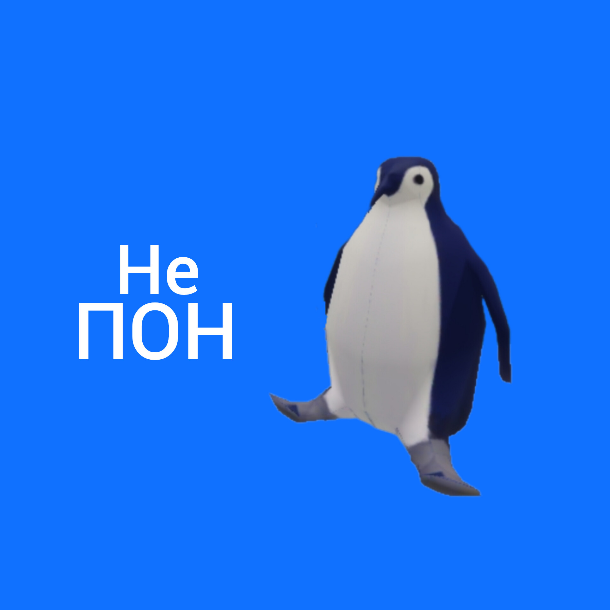

Челик с лайком
Челик с лайком - это интернет-мем, который используется для обозначения человека, который активно использует социальные сети и оставляет лайки на фотографиях, комментариях и других публикациях.
Подробнее о МЕМЕ очень важо!!!!!!
Акула ПОН
Пон мем – это интернет-мем, изначально начавший своё распространение в русскоязычной сети. Картинка представляет собой белую акулу с надписью "пон", что является сокращением от слова "понятно". Автором данного мема является пользователь с ником "ми шиш четыреста четырнадцать". Изображение часто используется в интернет-общении для обозначения понимания или согласия с высказыванием собеседника.
Подробнее о МЕМЕ очень важно!!!!!!
Лицо Trollface
Trollface (с англ. — «Лицо тролля») — мем-образ персонажа, носящего озорную улыбку, используемый для символизации интернет-троллей и интернет-троллинга.
Подробнее о МЕМЕ очень важно!!!!!!
МЕМ LOL
LOL — это англоязычный мем, который расшифровывается как «laughing out loud» (буквально переводится как «громко смеяться»). Обычно его используют как реакцию на что-то смешное или абсурдное. Это слово стало настолько популярным, что его часто используют не только в письменной, но и в устной речи.
Подробнее о МЕМЕ очень важно!!!!!!
Даге
Doge (Пёсенька, Пёсе, Собакен, Доге, Догэ) – фото собаки породы сиба-ину по кличке Кабосу с выразительной мимикой.
Подробнее о МЕМЕ очень важно!!!!!!
THIS IS FINE
мем This is fine или «Все хорошо» используется в ситуациях, когда кто-то пытается найти позитивные стороны в происходящем. Даже если происходит что-то очень страшное и непоправимое.
Подробнее о МЕМЕ очень важно!!!!!!
Flork
Флорк (Flork of Cows) — мемный комикс с человечком, нарисованным чёрными линиями. Персонаж похож на куклу из носка.
Подробнее о МЕМЕ очень важно!!!!!!
Бу!! Испугался??
Бу испугался не бойся – мем с кукольным котом, который говорит мужским голосом. Завирусился в Тиктоке в начале октября 2024 года.
Подробнее о МЕМЕ очень важно!!!!!! Пнгвин НЕ ПОН
Прикольный мем.Который описывает что ты чегото не понимаешь.
Подробнее о МЕМЕ очень важно!!!!!!